About Tanzania
About Tanzania Dodoma is unique not least because it is a capital of a large country popular among tourists - Tanzania, and yet the city remains surprisingly little known and explored. Nevertheless, both Dodoma itself and the eponymous region are very interesting. A lot of fascinating sights from many historic periods and sites of outstanding natural beauty are waiting for travelers who are not afraid to step off the beaten path. So what is the actual capital of Tanzania? What is the history of Dodoma? Where is it located? What kind of city Dodoma is and what can you see there and in the surrounding areas? Read on to find the answers to these questions and more!
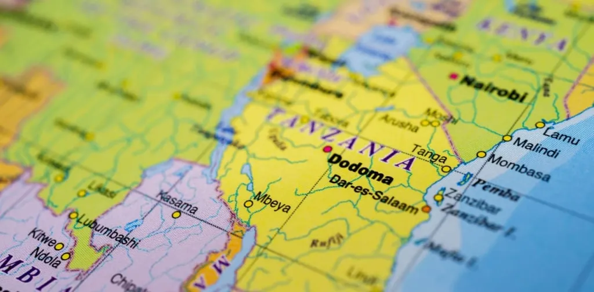
So what is the capital of Tanzania after all - Dodoma or Dar es Salaam?
Modern Tanzania as we know it since its Tanganyika (a former British colony, territorially overlapping with present mainland Tanzania) gained independence from Britain in 1961, and more than 2 years later after the revolution, it was joined by the islands of Zanzibar freed from the rule of pro-Oman Sultan. This is how the United Republic of Tanzania or modern Tanzania was formed in 1964.. was initially ruled from Dar es Salaam for over three decades (this multi-million coastal city was the capital for 32 years). Since 1996, Dodoma is considered the official capital of the republic. Although in many ways this is only a nominal function - most government offices, the offices of banks and major national companies, and all embassies still remain in Dar es Salaam.
Perhaps the most famous example in the world of a capital that was assigned this role “artificially” is Canberra in Australia. And many people are still convinced that Sydney is the capital of that country. Visitors to Tanzania are also often surprised to learn that Dar es Salaam is not the capital of Tanzania and it is in fact Dodoma. These two capitals, Tanzanian and Australian, have comparable populations, although the latter has had half a century more to establish itself.
If we compare Tanzania's Dodoma with the capitals of nearby African countries, examples of similar development are the capital of neighboring Malawi - Lilongwe, the capital of Nigeria - Abuja, the Mauritanian capital of Nouakchott, and Gaborone - the capital of Botswana. All these countries also gained independence in the 1960s, and the transfer of the capital marked the beginning of a new period in the life of their people. In Tanzania, the process dragged on for decades, and continues to this day, although the idea was exactly the same as that of its neighbors. What went wrong and why? We will touch on it a little later, but now let's learn a few things about the city itself.
What kind of city is Dodoma?
Dodoma is a relatively small city, which according to the latest data (statistics from 2012) has a permanent population of 410.000 people. It gives the impression of a cozy and bright city, built with a well-thought-out layout. There is no piling up of tall buildings, on the contrary, we can say that the capital of Tanzania fits very harmoniously into the natural landscape of the savannah and the surrounding hills.
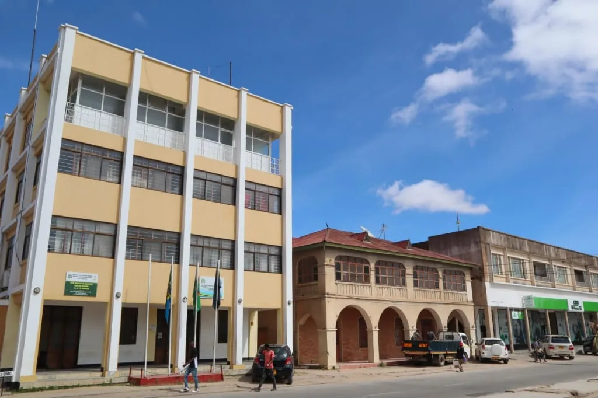
The city is crossed by two regional roads running north-south and east-west. Thus, Dodoma is divided into four segments, and each of those segments is well-designed and divided into neighborhoods. The planning of the new capital was approached with such care that the master plan was developed twice, the competition was attended by international companies, and the approval of the final project, in the end, took more than ten years.
The streets of the city are pleasant to walk on - there are pedestrian sidewalks (in general, for traditional urban planning in Tanzania, this is a serious problem). Also, Dodoma was originally designed as a modern capital with facilities for cyclists and convenient bus services. Traditional dala dalas - minibusses that operate like shuttle buses run through the city, as well as bajaji, popular covered three-wheeled cabs.
The tallest building in the capital is the Anglican Tower, a 14-story building reaching 54 meters in height. In addition to it, Dodoma has three similar office towers with 11 or 12 storeys. Otherwise, the city is pleasing in the fact that it does not overhang you. Dodoma feels open and welcoming, giving a feeling of almost provincial peace in the depths of the African continent. This is in stark contrast to Dar es Salaam, which is perpetually jammed with traffic and churning out skyscrapers one after the other.
What to see in Dodoma
It's hard to tell the story of Dodoma from the perspective of tourism. Every now and then you come across the shortcomings of Tanzania's artificial capital which highlight the city's slow development. But, of course, it also has many positive sides that are worth seeing in person or, at least, learning about them remotely, just through reading and looking at the pictures.
Mosques and Cathedrals
One of the sights worthy of attention in Dodoma is Gaddafi Mosque, named after the Libyan politician who gave the money to build it. It is the largest mosque in Tanzania, which can accommodate up to 3000 visitors. The beautiful bright building with arched walls on the perimeter stands under the open African sky and is generously lit by the sun almost all year round. Next to the mosque, there is a small green area, which contrasts interestingly with the pink walls of the prayer building. Inside, even a traveler far from religion will find peace, an opportunity to rest, and coolness, much sought-after in Africa.
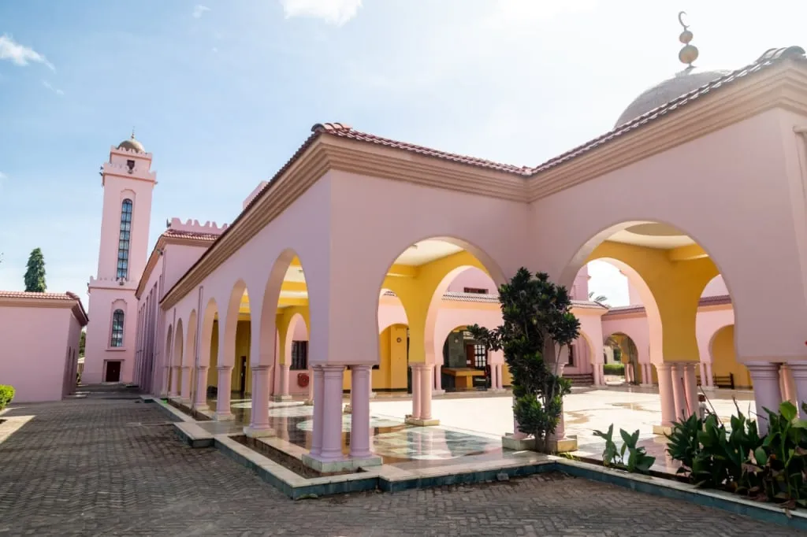
If you travel to Dodoma by plane, it will take you only minutes to get from the airport to the mosque. The airport is very conveniently located not far from the city center. But this, among other things, is a also problem the authorities are struggling to solve. The airport’s position does not allow for an increase in the length of the runway, and thus it is impossible to receive large planes (which is necessary for the further development of the city). And here we return to the question of why officials, bankers, foreign consuls, and entrepreneurs are in no hurry to move from Dar es Salaam to the inner-continental capital.
There is a project to build a new, modern airport for Dodoma, with international status. It should be located just to the north, in Msalato, with a longer runway, better-equipped infrastructure, and be able to accommodate much larger passenger and cargo airliners. Hopefully, the project will soon come to fruition, attracting people and finance to Dodoma, which will make the capital even more attractive to travelers.
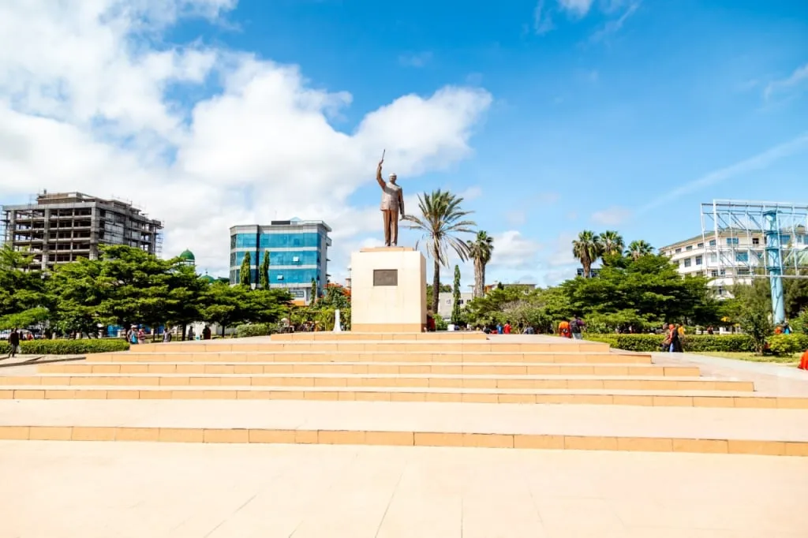
If you go down the Nyerere Road from Gaddafi Mosque, you'll find yourself in the heart of the city - Nyerere Square with a monument to... you've guessed who, of course. Julius Nyerere was the first president of Tanzania, who did a lot for the independence of the former colony from Britain. He was also responsible for the development of the republic at the dawn of its modern history. Don't forget to take selfies in front of the smiling Baba Wa Taifa, i.e. the Father of the Nation.
You can find several other mosques near Nyerere Square. And there are also quite a few scattered all over Dodoma, so you can make a quest to find the most beautiful ones. Be sure to look for Sunni Mosque - a beautiful white building, recognizable from afar by its green domes (if you find the mosque during the day, don't forget to return to it in the evening to see the beautiful place of Muslim worship highlighted by the illumination).
Nearby you can find the impressive Anglican Cathedral building and the rather simple red-brick Lutheran Cathedral. By the way, the Tanzanian branch of the Anglican Communion has founded its own private university - St. John's University of Tanzania, around which an entire unique area has developed - very green and resembling an oasis in the middle of the sun-dry African land. It is located in the south of Dodoma.
The biggest university in Dodoma and in the whole of Tanzania is the University of Dodoma (UDOM), which is responsible for the education of the country’s highly qualified future cadres. The University of Dodoma surpasses the University of Dar es Salaam in terms of campus size and student enrollment. Along with the infrastructural development of the capital, the progress of local education is a good factor for Dodoma's continued growth. However, we wouldn't specifically advise you to go out of town just to visit the campus.
What other sights are there in Dodoma?
When you're in town, take a stroll through the streets and check out the Central Market (Soko Kuu) on Ndowu Road. You can find fresh fruits, vegetables, and other produce there, as well as all kinds of small things needed in the households of the capital's residents. Maybe you'll find something for yourself, too.
The parliament building - The National Assembly of Tanzania, also known as Bunge la Tanzania, is of some interest also. But the catch is that the parliament meets in Dodoma only four times a year (the rest of the time the lawmakers work in Dar es Salaam), which means that getting into the Bunge building itself is problematic. Nevertheless, finding and photographing this unusual architectural structure at least from afar is a worthy challenge for any inquisitive traveler.
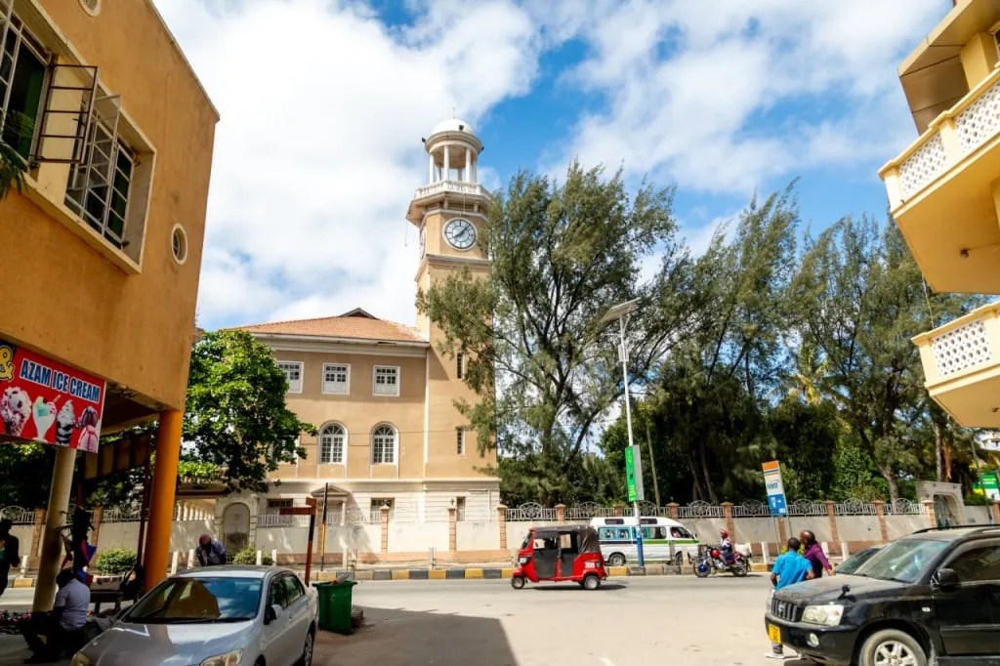
Dodoma travel brochures also mention the so-called Geological Museum. Be warned right away, don't expect to see something exciting if you go there. In fact, it's a government agency - a geological survey service, which routinely does research in its own laboratories. They have exhibition samples of various rocks, minerals, and fossils, but those are likely to be of interest only to specialists.
In general, the city is not particularly rich in tourist attractions, if we’re being honest. Perhaps the most interesting thing to do here is simply walk the streets of Dodoma, noticing the peculiarities of African architecture, and discovering pretty buildings or green spaces. Until recently you could see the whole town from the Lion Rock overlooking Dodoma, but now this area is closed by the city authorities, so don't waste your time looking for it.
We only have one last peek at the train station before heading out to the outskirts of the capital and other remote areas of central Tanzania. The Dodoma train station building is considered one of the city's landmarks because it was built in the early 20th century. This bright building dates back to the colonial period of the country's history and is a reminder of the times when these lands were ruled by the Germans.
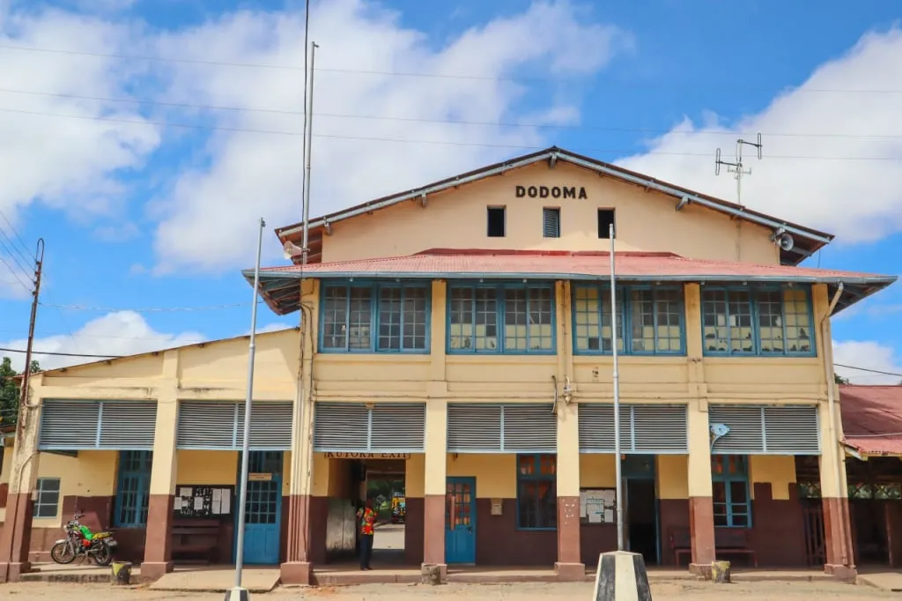
What is the history of Dodoma?
The railway station in Dodoma was built in 1910 when a vital railway line running from the port of Dar es Salaam to the strategically important Lake Tanganyika reached the town. Back then Dar es Salaam was the main city of the colony, and Lake Tanganyika on the border with the then-Belgian colony of Congo had high strategic importance. Originally, there was a village of the local Gogo people on the site of modern Dodoma, who traditionally lived on the territories of modern central Tanzania. The Germans founded a small colonial settlement on the basis of that village in 1890. It was the railroad that gave impetus to the development of the city, which grew especially noticeably under British rule.
The idea of moving the capital from the coastal Dar es Salaam, vulnerable to enemy naval attacks, to the center of the colony was first raised in 1916. Dodoma was then seen as a potential capital. Later the same idea was voiced by the British government, which inherited the German colony in East Africa under the Versailles Peace Treaty, which ended World War I. However, they have never implemented this plan.
Once again the Tanzanians themselves returned to the discussion of moving the capital in 1961, after achieving independence from Great Britain. Now the main argument in favor was not the safety of the capital in case of enemy attack, but the need to develop the vast interior of the country, where the distances between settlements were large and the cities experienced slow growth.
Such long conversations that stretch over decades, remind us of the Brazilian example of moving the capital from Rio de Janeiro to the purpose-built Brasilia. The essential difference between the cases of Brazil and Tanzania was that in the end, the South American country managed to implement such a large-scale project in a short time. The similarity is that in both cases it did not go according to plan.
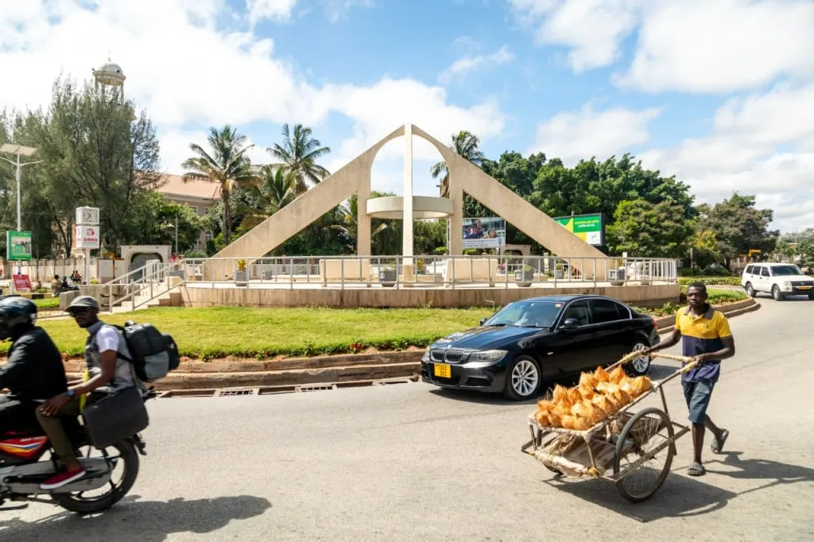
The decision was finally made in 1973 by President Julius Nyerere (whose statue stands at the central square of modern Dodoma). By that time, the city's population had surpassed 40,000, but there was still plenty of potential for growth. In contrast, the then-capital Dar es Salaam was already overpopulated and had reached the limits of its organic development, putting pressure on the local natural resources.
Dodoma stood at the crossroads of important roads connecting northern Arusha with southern Mbeya, and eastern Dar es Salaam with the large city of Mwanza in the northwest. The town was surrounded by beautiful scenery and has always had a good climate - not too hot (average temperatures ranging from 16.5 to 28.8 ° C) and not too humid, with one moderate rainy season from about December to April. In contrast, the heat and humidity of Dar es Salaam markedly reduced working productivity. Moreover, floods periodically eroded the city during the rainy seasons, which occur twice a year on the coast. Incidentally, this problem in Dar es Salaam has not yet been solved.
In general, many factors prompted the move of the Tanzanian capital to Dodoma, and the government organized the preparation of two concept plans for the city. The first was demonstrated in 1976, which presented Dodoma as an idyllic garden city, and the second in 1988, as more realistic and tangibly more economical. The implementation of the second plan began in the 1990s, and, as we can see, continues sluggishly to this day. In 1996, the parliament was obliged to meet four times a year in Dodoma. Officials are said to still travel reluctantly to the capital, struggling to succumb to the allure of this cozy town, too much like a provincial administrative center.
The surroundings of Dodoma
According to the adopted plan, the city was to be very green and full of all kinds of horticultural projects, a kind of urban version of a typical rural settlement. This lay well with the popular 1960s idea of special African socialism (ujamaa) based on collective farming. Later, when it became clear that "capitalism" was inevitable as the natural way of the country's economic development, the city remained a city, but many plantations still appeared in its vicinity. The region grows legumes (primarily peanuts), coffee, tobacco, grains (corn, rice, and wheat), sorghum, sisal, tea, and even grapes. Livestock farming is also developed here, with a particular focus on cattle.
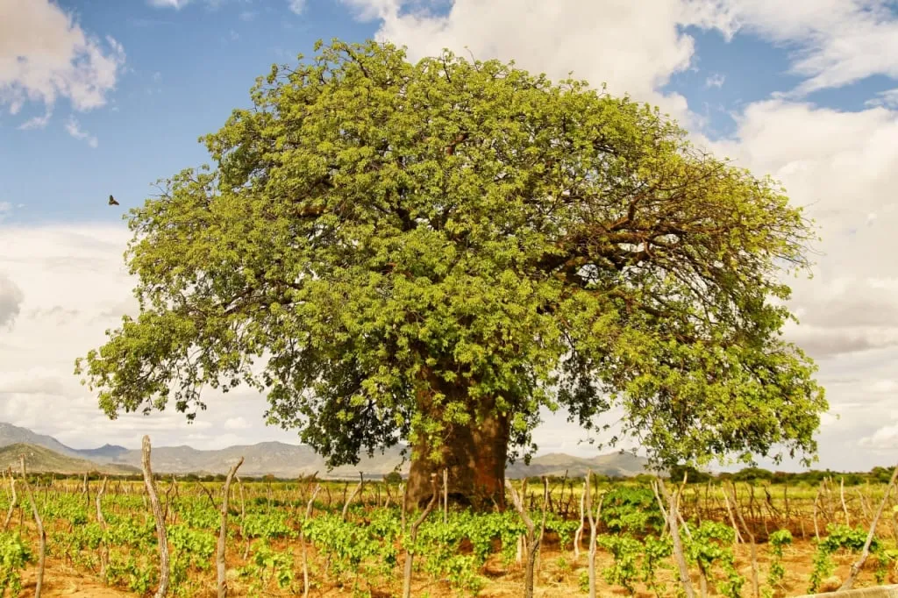
Dodoma region covers more than 41,000 km2, which is comparable to countries like Switzerland and the Netherlands. The region could fit in two Slovenias or four Cypruses! So there is plenty of room for farmers and agricultural landowners.
Perhaps the most unexpected discovery for tourists is the fact that Tanzania has vineyards and, consequently, has its own wine production. The most famous wine-producing country in Africa is South Africa, which is steadily holding the 8th place in the world in terms of production output. The Mediterranean countries of North Africa are also famous for their vineyards. However, if we consider the part of the continent south of the Sahara, the second largest wine-making region is Tanzania, and all the vineyards of the country are concentrated just outside Dodoma.
It has an ideal climate for growing grapes and for producing dry red and white wines: the region is very sunny, the humidity is low, and the soil is sandy. The climate of the Dodoma region makes it possible to collect two harvests each year. Beginning as a missionary experiment, winemaking in Dodoma has continued as a state-supported industrial production.
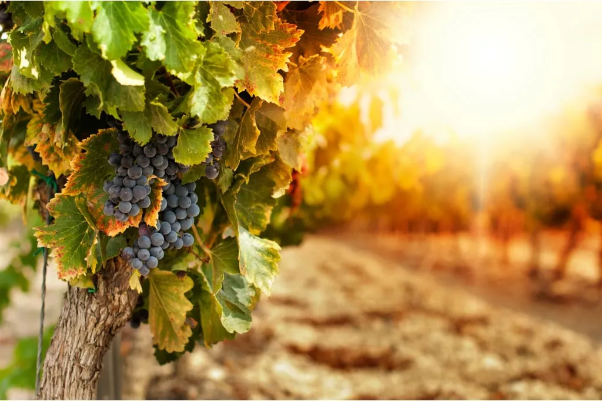
Today, the scale of winemaking and selection of new grape varieties indicates great interest in this field on the part of both the Tanzanian government and businesses. The mere fact that in recent years the Tanzanian Agricultural Research Institute has promoted and assisted the import and cultivation of new wine grape varieties from South Africa shows the desire of the country and the region to reach a new level in winemaking. And the findings of recent studies hint at ample opportunities in this direction: grapes can be grown not only in Dodoma but also in the neighboring regions, including the climatically suitable Kilimanjaro region.
By the way, a grape variety that grows only here and nowhere else can be considered a unique feature of the Dodoma region. It is called Makutupora, after the name of the area where it grows. It is a red grape from a locality 20 kilometers north of Dodoma. In addition to the local Makutupora, other grape varieties grown in Dodoma include Chenin Blanc, Cinsaut, Aglianico, Shiraz (Syrah), and Cabernet Sauvignon.
Since there are several wineries in the region, if you plan your tour itinerary well, you can visit some of them, or at least taste the local wines. Who knows, perhaps you will be among the first to taste and appreciate a Tanzanian wine, which in a few years will manage to win the hearts of oenophiles by appearing on the wine lists of restaurants in other parts of the world (as, for example, is now happening with Georgian wines).
Tourism in the Dodoma region
Dodoma has a truly privileged location at the heart of Tanzania. From here roads lead in all directions to popular nature reserves in the central part of the country, to the green south, or to the north of Tanzania, where the most popular tourist destinations are concentrated.
National Parks and Reserves near Dodoma
The closest national park to Dodoma is Ruaha, Tanzania's second largest park after Nyerere National Park. More broadly, Ruaha is a part of the Rungwa-Kizigo-Muhesi ecosystem, which includes the famous Rungwa Reserve (Rungwa Game Reserve) as well as Kizigo and Muhesi reserves and the MBOMIPA Wildlife Management Area. In fact, a part of Ruaha Park is located in one of the southern areas of the Dodoma region.
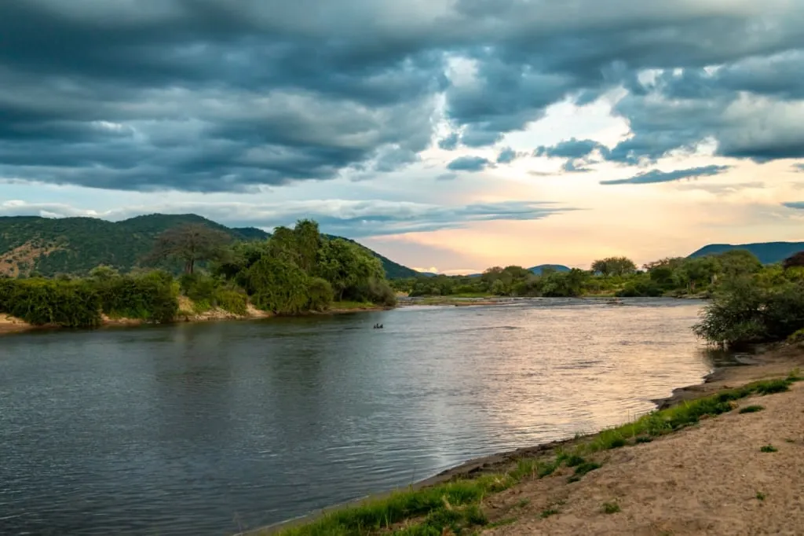
Ruaha is home to both the Lesser and Greater Kudu - beautiful antelopes with large spiraling horns. Other species of antelope, including Grant's gazelle, are also found here. Elephants, giraffes, lions, leopards, cheetahs, hyena dogs, and other animals live in large populations in the park. There are huge hippos thriving in the waters of the great Ruaha River. Moreover, the park is inhabited by more than 500 species of birds! Apart from the stunningly diverse wildlife, there are interesting archeological sites and many discoveries of ancient rock art have been made here.
The northernmost area of the Dodoma region contains a part of Tarangire National Park, which is often called the "little Serengeti". Tarangire is home to a large number of elephants, for which the park is also known as "The Paradise of Elephants". These animals look very organic next to the majestic baobabs in the valley of the Tarangire River. Zebras and giraffes stroll through the trees, warthogs scurry to and fro, and herds of beautiful impalas run wild. Lions, buffalo, cheetahs, and large eland antelopes are not so rare here either, as well as many other animal species.
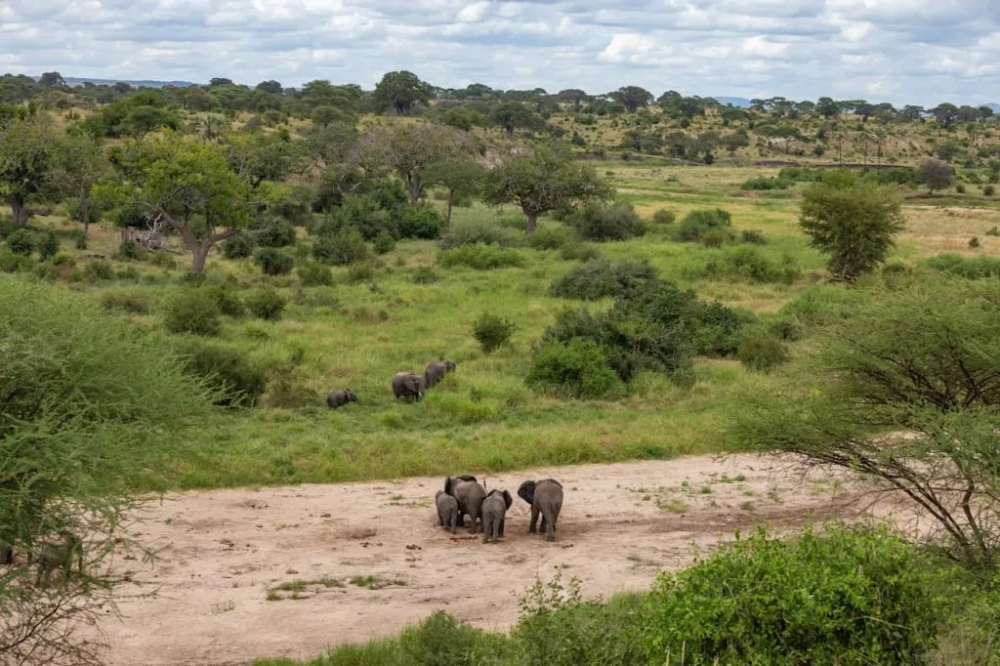
The Swagaswaga Game Reserve in the Dodoma region is home to elephants, warthogs, and very cute duikers - small antelopes native to sub-Saharan Africa. Many other species of antelope thrive in this park too. Another reserve here is Mkungunero Game Reserve, which is a part of the Tarangire-Manyara ecosystem, where you can see the cow antelope kongoni, giraffe gazelle (gerenuk), hyena, warthog, baboons, zebra, elephant, lion, and other animals.
If you have plans to visit the most popular protected areas in Tanzania, such as the famous Serengeti National Park, the spectacular Ngorongoro Crater, the main peak of Africa - Kilimanjaro and its surroundings, and other natural attractions of northern Tanzania, write to our managers, and we will create the perfect program for your trip to Africa with safari and other activities!
Rock Art in Kondoa
Dodoma region is famous for its historical monuments inherited from the ancient tribal cultures that lived in these territories. The list of national historic sites in Tanzania includes two locations where archaeologists have discovered rock paintings. They are located in the areas of Kondoa and Baja.
The Kondoa rock art is a UNESCO World Heritage Site. Kondoa is located about 150 kilometers north of Dodoma, in the direction of Babati. The drawings can be found on the so-called Masai escarpment (a reference point is the Kolo Rock Museum & Tourist Information Center in the village of Kolo). The ancient paintings are quite numerous and are scattered over a wide area.
In this place, scientists have found from 150 to 450 shelters with rock art left by the people of the Sandawe and Maasai tribes. You can learn a lot of interesting information about the culture and traditions of the most famous African people - the Maasai - in our article with beautiful pictures. Ancient Maasai and Sandave artists depicted hunting scenes, tribal rituals, and other traditions of their peoples on the rock walls. If you want to read more about the rock art of Africa and at Kondoa in particular, here’s a wonderfully detailed article about it.
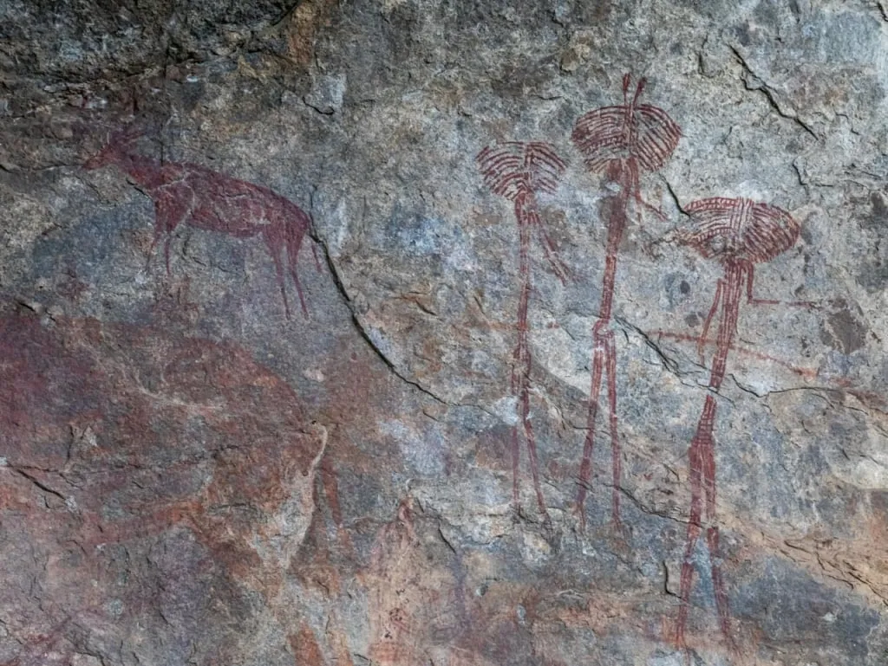
The Kondoa rock art collection consists of individual paintings scattered on the walls of stone shelters, shallow caves, and cliffs. Most often, there are depictions of people performing certain rituals or daily activities. Sometimes we can see silhouettes of animals painted on the rock as well. As a rule, ancient artists either wished to depict the life of their tribe or to help some of their own people by evoking divine powers. For example, to heal the wounded, to ensure success in hunting, or to call for rain - ritual depictions on the rock walls called for the help of spirits guarding the tribe.
Unfortunately, we do not have exact dating for the rock carvings and paintings. But for other artifacts found at the Kondoa sites, it was possible to conduct radiocarbon research, which showed dates exceeding 40,000 years! It is also interesting that not all the images belong to such remote antiquity. Some of them are very recent - according to scientists, several drawings were applied in the 1970s by members of the local tribes.
Cave paintings have also been found in Bahi, although much less is known about them. It is assumed that their authors belonged to the more ancient Wamiya people, whose habitable lands became settled later by the Gogo tribes, traditionally inhabiting the Dodoma region. And the Gogo artists, apparently, did not understand the meaning of the original images and supplemented them at their own discretion.
The rock art of ancient Tanzania, along with the Olduvai Gorge and other cultural heritage sites has yet to be studied in more detail. Hopefully, the pilgrimage of scientists to this region rich in historical monuments will continue, which means new discoveries will be made that will attract even more travelers from all over the world.
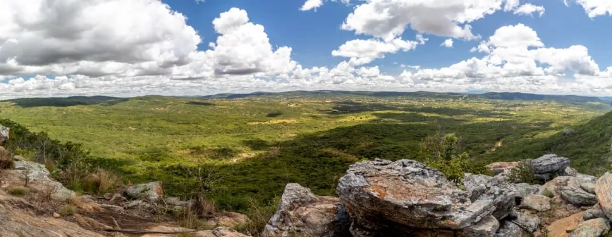
As you can see, Tanzania, in general, is interesting not only for its marvelous and rich wildlife with huge populations of animals but also for its cultural history in the broadest sense, and modern cities like Dodoma, which have a peculiar and in their own way attractive development.
All content on Angelino Adventures is created with expert insights and thorough research, in line with our Editorial Policy.


Want to know more about Tanzania adventures?
Get in touch with our team! We've explored all the top destinations across Tanzania. Our Kilimanjaro-based adventure consultants are ready to share tips and help you plan your unforgettable journey.
 Tanzania Safaris
Tanzania Safaris
 Kilimanjaro and other mountains
Kilimanjaro and other mountains
 About Angelino Adventures
About Angelino Adventures
 About Tanzania
About Tanzania